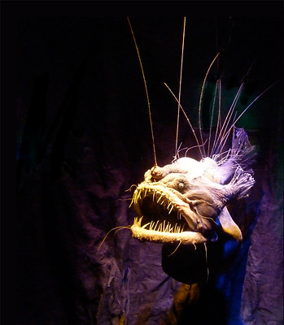

Anglerfish!

Facts:
- The light at the end of the anglerfish's head is used to lure prey.
- Male anglerfish are much smaller than females.
- The anglerfish is a carnivore, often with sharp teeth that point inwards in order to remove any obstacles for swallowing prey.
- The anglerfish can be found in any ocean, at various depths.